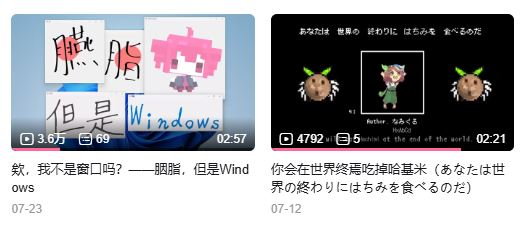

之前@AbCd在B站上发了一些视频，视频质量都很不错，但因为他是新人UP主，播放量不理想，甚至可以用惨淡来形容。我决定给他整点推广啥的（毕竟那个程序我也出了点微薄之力）下图还是推广后的情况
我tm前前后后花了150r就这个效果，播放只多了几千，粉丝更是只涨了10个，花费多，效果差，感觉陈睿家里唯一有气的只剩可乐了
当然，人家也算是明码标价，这效果不理想也只能说买个教训，我再也不会给阿B爆金币了。不过让我感到疑惑甚至愤怒的是，别人随手拍的视频（甚至盗的视频）都有可能几十万播放量，而和我同类的UP主即使高创作品的播放量也难以赶上那些短视频的零头，这也说明现在已经是个流量至上的时代，人们更喜欢那些抽象的流行的事物，而一些技术向的甚至都有些上不了台面了？